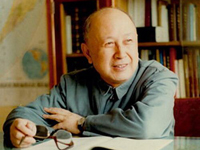
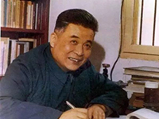
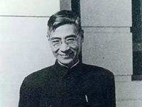
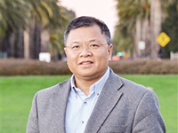
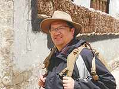
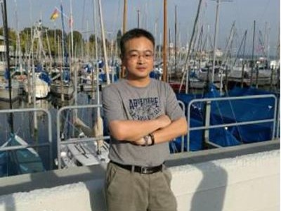

文件精神
动态新闻
>>> 潘垣院士团队研制高压断路器开断容量达国际最高水平
2018/09/30
>>>
电气与电子工程学院院长文劲宇：把每个学生好好培养出来
2018/09/19
>>> 物理学院黎卿：一位博士后的科研“初体验”
2018/09/16
优秀典型

钱学森:中国航天事业奠基人
作为“两弹一星”功勋奖章获得者的钱学森，数十年呕心沥血、攻坚克难，为了祖国的航天事业作出了彪炳史册的贡献。

两弹元勋邓稼先
顶着重重压力，邓稼先和他的同事们进行上万次的计算，仅仅用了三年时间，就敲开了中国人自主研制原子弹的大门

"两弹一星"元勋郭永怀
郭永怀横跨核弹、导弹、人造卫星三个领域，是唯一一位以烈士身份被追授“两弹一星”功勋奖章的科学家。

黄大年:振兴中华乃我辈之责
作为国际著名地球物理学家的黄大年，为我国的深地资源探测和国防安全建设做出突出贡献，直到生命的最后一刻。

钟扬:国家生态安全的守护者
钟扬生前长期致力于生物多样性研究和保护，率领团队在青藏高原为国家种质库收集了数千万颗植物种子。

黄群：台风中 他用生命撑起船舶梦
为了保护国家重点实验室，履行共产党员的职责，华中大校友黄群于2018年8月20日，因台风中抢救国家重点试验平台英勇就义。
学习交流
>>> 新华社评论员：弘扬报国志 建功新时代
2018/07/31
>>> 怀进鹏：高扬爱国奋斗主旋律
引领创新建功新时代
2018/08/10
>>>
邱勇：主动请缨，勇担时代使命
2018/08/14